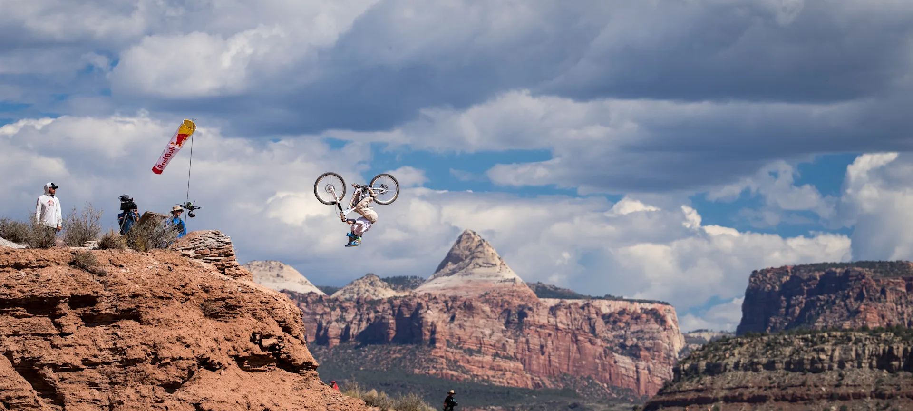
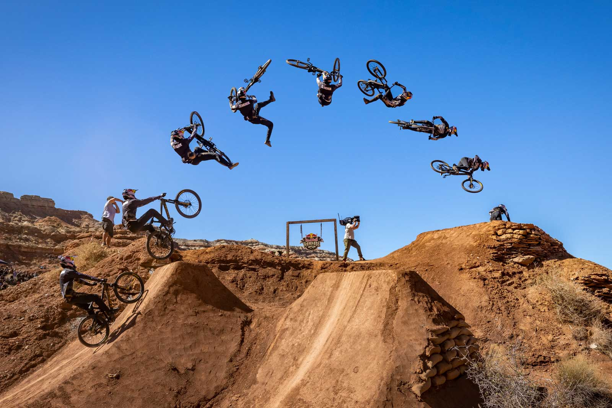

Как это устроено
Времени никто не замеряет. У каждого райдера два заезда, судьи ставят баллы за линию, сложность и трюки, а побеждает лучший заезд. Склон никто не готовит заранее: райдеры вместе с двумя помощниками неделю роют линии, трамплины и приземления вручную, без электроинструмента. Ничего, кроме фигур для прыжков, гора остается практически нетронутой
Коротко об истории
Первый Rampage состоялся в 2001 году, призовой фонд тогда был $8 000. До 2004 года его проводили на Kolob Terrace Road у границы национального парка Зайон. После перерыва соревнование вернулось в 2008 году на новую площадку, и появились деревянные конструкции. В 2024 году к мужскому турниру добавили женский. Юбилейный Rampage 2026 вернулся на оригинальную площадку 2001 года. Он стал 20-м по счёту, а мужской этап отменили из-за ветра: Шимон Годзик набрал 90 баллов, но заезды успели проехать не все, поэтому победителя нет. Среди женщин Робин Гумс выиграла в третий раз подряд.

Рекордсмен — Брэндон Семенюк (5 побед), следом Курт Сорж (3). По две победы у Кайла Стрейта, Кэма Зинка и Бретта Ридера.

Победители за 25 лет
Rampage проводили не каждый год: паузы были в 2005–2007, 2009, 2011 и 2020 годах.
| Год | Победитель | Страна | Очки |
|---|---|---|---|
| 2001 | Уэйд Симмонс | Канада | 78.40 |
| 2002 | Тайлер Классен | Канада | 79.60 |
| 2003 | Седрик Грасиа | Франция | 88.80 |
| 2004 | Кайл Стрейт | США | 85.80 |
| 2008 | Брэндон Семенюк | Канада | 82.20 |
| 2010 | Кэм Зинк | США | 89.20 |
| 2012 | Курт Сорж | Канада | 86.75 |
| 2013 | Кайл Стрейт | США | 87.50 |
| 2014 | Андреу Лакондегуи | Испания | 95.25 |
| 2015 | Курт Сорж | Канада | 96.50 |
| 2016 | Брэндон Семенюк | Канада | 84.33 |
| 2017 | Курт Сорж | Канада | 92.66 |
| 2018 | Бретт Ридер | Канада | 89.66 |
| 2019 | Брэндон Семенюк | Канада | 92.33 |
| 2021 | Брэндон Семенюк | Канада | 89.00 |
| 2022 | Бретт Ридер | Канада | 90.66 |
| 2023 | Кэм Зинк | США | 95.00 |
| 2024 | Брэндон Семенюк | Канада | 92.73 |
| 2025 | Хейден Заблотни | США | 96.00 |
| 2026 | Победитель не определён (соревнования отменили посреди заездов из-за ветра) | — | |
| Год | Победительница | Страна | Очки |
|---|---|---|---|
| 2024 | Робин Гумс | Новая Зеландия | 85.00 |
| 2025 | Робин Гумс | Новая Зеландия | 89.50 |
| 2026 | Робин Гумс | Новая Зеландия | 93.50 |
Источники: Wikipedia, redbull.com, Pinkbike.